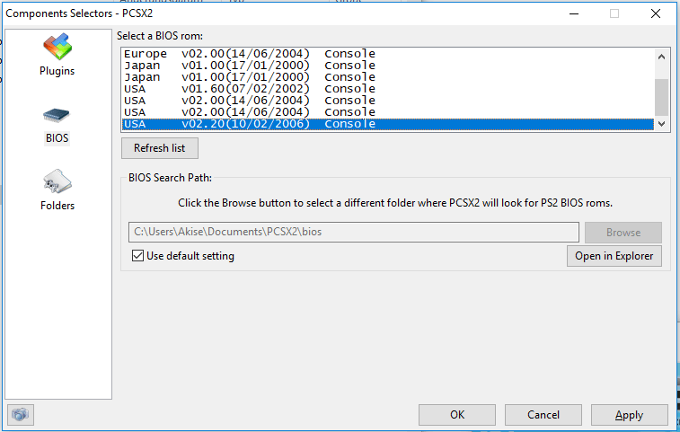
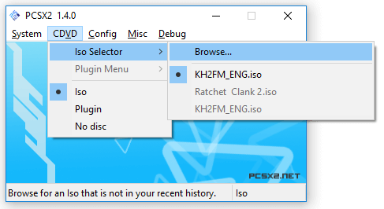
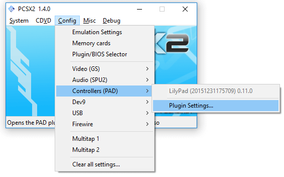
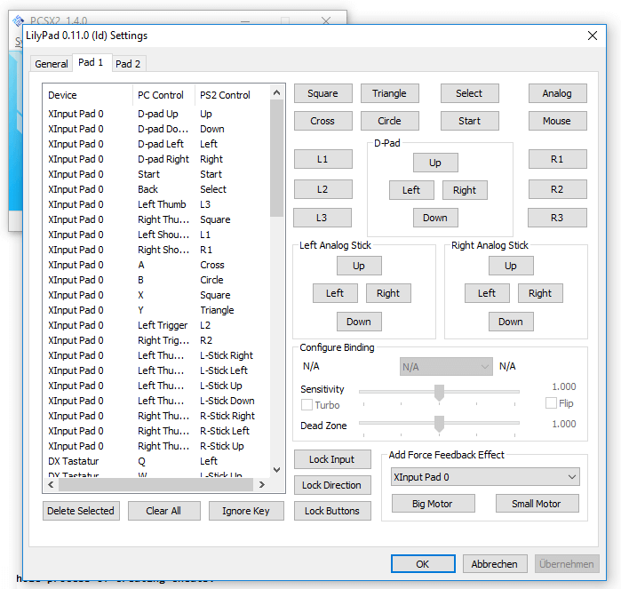
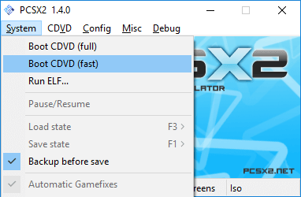

PCSX2 is a powerful tool that lets you emulate PS2 games on Windows and Linux.
Download PCSX2 and install it. I personally use v1.4.0 and the screenshots here reflect that, v1.6.0 is completely different. Click YES if it tells you to upgrade DirectX.
You need the BIOS of a PS2 to emulate it. Either RIP it off your own PS2 or just download it.
Unpack the BIOS folders / data and copy them into your Documents/PCSX2/bios folder.

Next download the japanese Kingdom Hearts 2: Final Mix+ ISO. You may have to unpack it after downloading it with 7zip first. The game file itself should be ending with .iso
Now you have to go to CDVD->Select ISO and select the .iso

The only thing left is to configure your controls and then start the game. To configure the control setup, go to Config->Controllers->Plugin Settings

and then to the first tab at the top named "Pad1". Here you can map PS2 keys to your Keyboard or Controller.

To start a game, select System->Boot CDVD. Boot CDVD (fast) doesn't play the PS2 Intro logo, (full) plays it.
